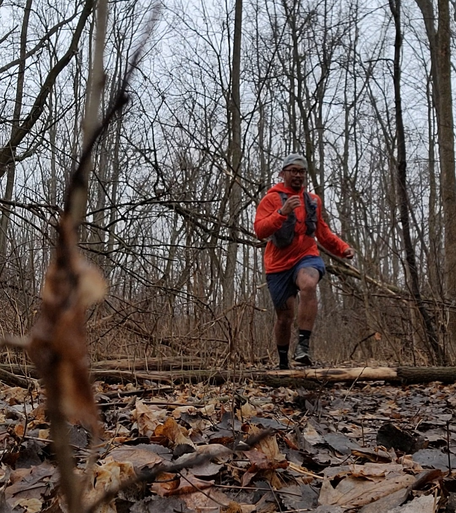

PJ Trinidad
If your willing to take your running to the next level PJ Trinidad will help you pursue your goals.
PJ has been involved with running and strength training for most of his life. His passion for running and lifing grew out of an interest in enhancing performance and preventing injuries.
He firmly believes we should all strive to find our true potential and to become stronger than we were yesterday. He also believes that with a smart approach, along with some good old fashion grit and hard work, anyone can reach their goals